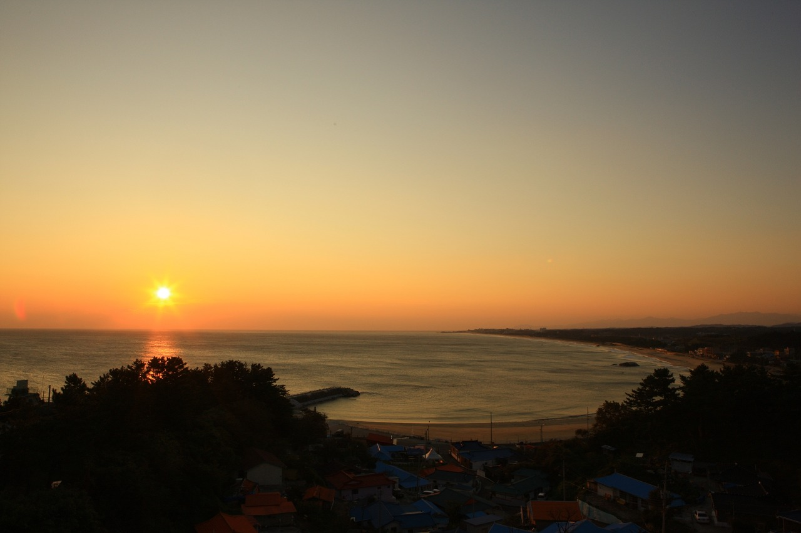
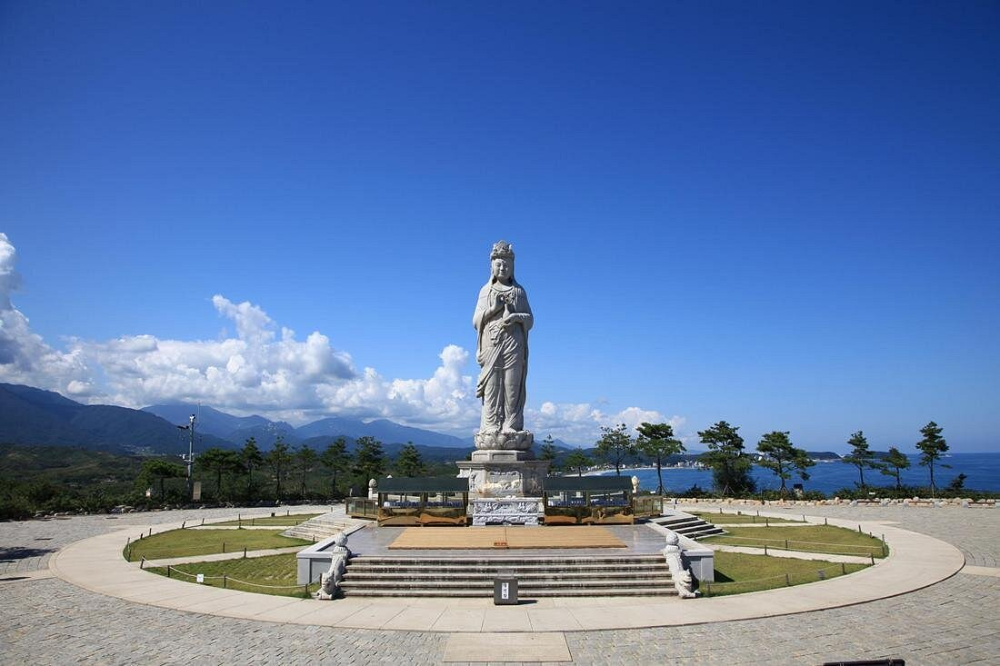
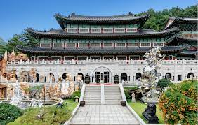

역동적인 강원도의 숨결을 느껴보세요
-

설악국립공원
1970년 우리나라에서 다섯 번째 국립공원으로
지정 1965년 천연기념물로 지정되었다.
설악산은 주봉인 대청봉을 비롯하여 소청봉,
중청봉, 화채봉 등 30여 개의 높은 산봉우리가
웅장하게 펼쳐져 있다. -

낙산해수욕장
울창한 소나무숲을 배경으로 4km의 백사장이
펼쳐져 있고, 설악산에서 흘러내리는 남대천이
하구에 호수를 이루고 있어 담수도 풍부합니다.
매년 새해에는 해맞이 축제가 열려 많은 사람들
의 소원을 염원하는 명소가 되기도 합니다. -

낙산사
동해바다가 한눈에 내려다보이는 천혜의 풍광
과 금강산,설악산과 함께 관동 3대 명산의 하나
로 손꼽히는 오봉산 자락에 자리잡았습니다. -

강원종합박물관
강원종합박물관은 2004년 12월 학교법인 대진
교육재단에서 동.서양의 고건축 양식을 응용
하여 건립 운영하고 있는 시설. 세계 각국의
유물 20,000여점을 전시하고 있다./p>